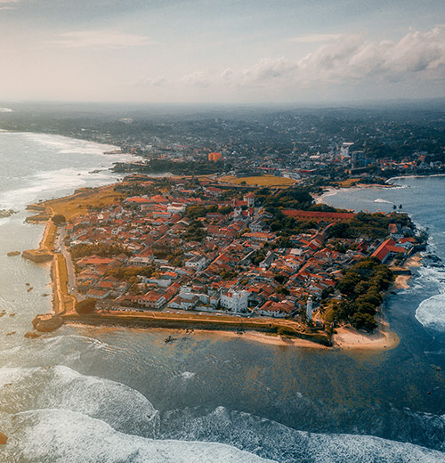

Galle, Sri Lanka, is famous for its historic Galle Fort, a UNESCO World Heritage site, featuring Dutch colonial architecture, vibrant cafes, and stunning ocean views. It’s also close to beautiful beaches like Unawatuna and Mirissa, making it a great spot for culture, history, and relaxation.
